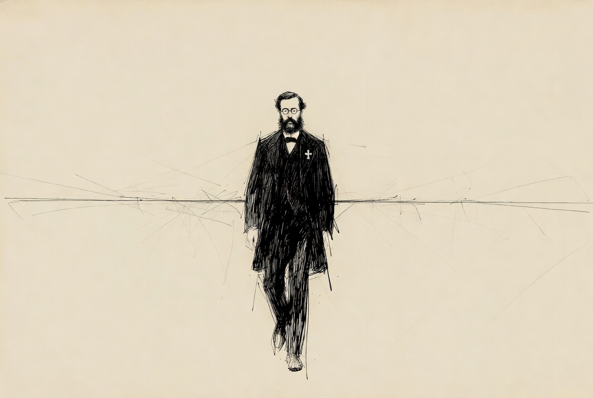

Kerckhoffs’s Principle.
Why we can show you exactly how the vault works, and lose nothing by doing it.

Security that does not depend on a secret.
There is an old instinct that says a lock is safer if no one knows how it is built. The opposite is true. A lock that is only safe because its design is hidden fails the moment someone works it out. And someone always works it out.
The better standard is more than a century old.
A system should stay secure even when everything about its design is public. The only thing that must stay secret is the key.Kerckhoffs’s principle, 1883
It is the reason we can publish the exact rules that lock your vault, the descriptor, the spending paths, the waiting periods, and give nothing away by doing so. The strength of a Musonius vault was never in keeping its design quiet. It is in the Bitcoin network enforcing rules that cannot be faked, and in your keys never leaving your hands. Publish the blueprint. The vault is just as safe.
Auguste Kerckhoffs.
Auguste Kerckhoffs (1835–1903) was a Dutch linguist and cryptographer, born in Nuth, in the Netherlands, and later a professor of languages in Paris. He spoke and taught several languages, and for a time was a leading champion of Volapük, an early attempt at a universal constructed language. He spent his life, in other words, on the problem of how meaning is shared clearly between people.
In 1883 he published a short work in a French military journal, La Cryptographie Militaire, or “Military Cryptography.” In it he set out six design rules for a practical battlefield cipher. Most are about being usable in the field: easy to operate, portable, workable over a telegraph. But the second rule outlived the rest and became the foundation of modern cryptography.
In plain terms, it says this: assume your adversary knows everything about how your system works, and design it so that is fine. The decades since have only proven him right. Every cipher that relied on a hidden design has eventually fallen. The ones that survive are the ones published openly, attacked by everyone, and still standing.
The cryptographer Claude Shannon later restated it even more bluntly, in a line engineers still quote today: the enemy knows the system.
Why we publish our own design.
Kerckhoffs’s principle is the quiet reason behind some of the most important things about a Musonius vault.
- We can publish the descriptor. The literal rules your bitcoin is locked to are written out on the technical page, because secrecy was never doing the work. The Bitcoin network is.
- We hand you the rules in writing. Your Sovereignty Backup Kit carries the full vault descriptor on paper, precisely because knowing the design is safe. It is the public blueprint that lets you recover your bitcoin with open-source tools and no help from us.
- You do not have to trust us. You can check us. A claim you can verify yourself is worth more than one you take on faith. Open design is what makes verification possible.
This is also why we are comfortable telling you exactly how everything works, in as much detail as you care to read. A vault whose safety depended on you not understanding it would not be a vault worth putting your savings in.
This product is named for the Stoic philosopher Musonius Rufus, and it is built on a conviction Kerckhoffs shared with him: sound principles do not need to be hidden to hold.
Trust in math. Not in people.